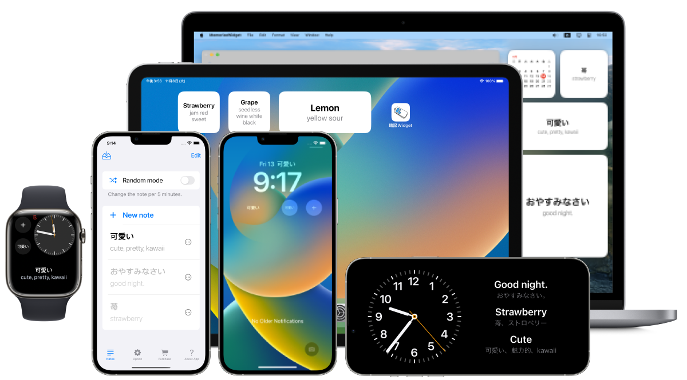

MemorizeWidget
Transformez votre iPhone/iPad/Apple Watch/Mac en carnet de notes !



Vue d'ensemble.
Affichez votre carnet de notes sur votre écran d'accueil ou votre écran de verrouillage à l'aide de la fonction widget. Application pour iPhone, iPad, Apple Watch et Mac.
- Deux modes : "mode autonome" et "mode aléatoire".
- En mode aléatoire, les notes affichées changent toutes les cinq minutes.
- Prise en charge du widget de l'écran de verrouillage (iOS 16 uniquement).
- Les données du mémorisateur peuvent être importées à partir de textes et de fichiers (csv, tsv, txt, etc.).
- Lien avec les dictionnaires intégrés au système d'exploitation
- Fonction de recherche personnalisable
- Synchronisation des données entre les appareils via iCloud

Options
- Affichage des "commentaires" et des "titres" des notes sur les widgets (uniquement pour les widgets de l'écran d'accueil et les widgets rectangulaires de l'écran de verrouillage).
- Affichage de plusieurs notes
Prise en charge multiplateforme
- iPhone : widget écran de verrouillage (iOS 16 ou ultérieur), widget écran d'accueil
- iPad : widget écran d'accueil
- Apple Watch : Complications
- Mac : widget centre de notification
Recommandé pour les derniers modèles d'iPhone 14 Pro !
Avec l'iPhone 14 Pro avec Always On Display, vous pouvez consulter votre bloc-notes sans toucher votre iPhone !

Citation : https://www.apple.com/jp/iphone-14-pro/
Spécifications techniques
Prix
Gratuit
Achat in-app
Masquer les publicités (160 yens)
Plateformes
- iOS 15.6 ou ultérieur
- iPadOS 15.6 ou version ultérieure
- watchOS 9.0 ou version ultérieure
- macOS 12.4 ou version ultérieure
Langues prises en charge

日本語(native)
English
Indonesia
Español
Deutsch
Français
Português
Русский
中文
Українська
한국어